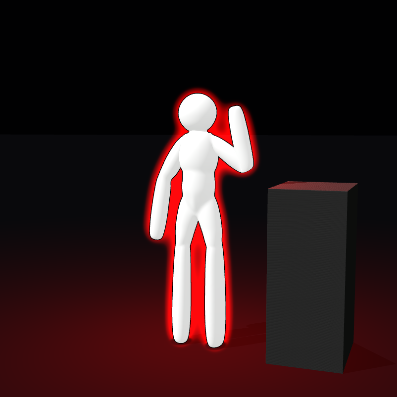
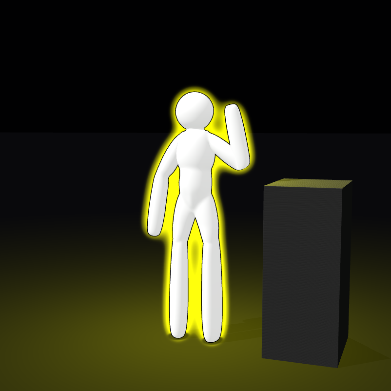
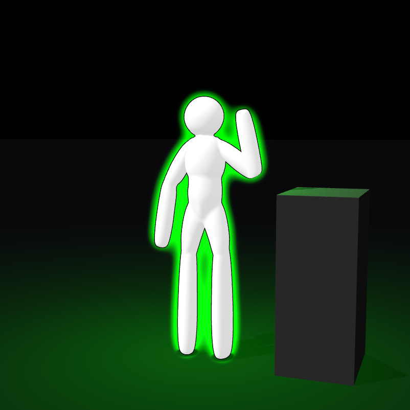
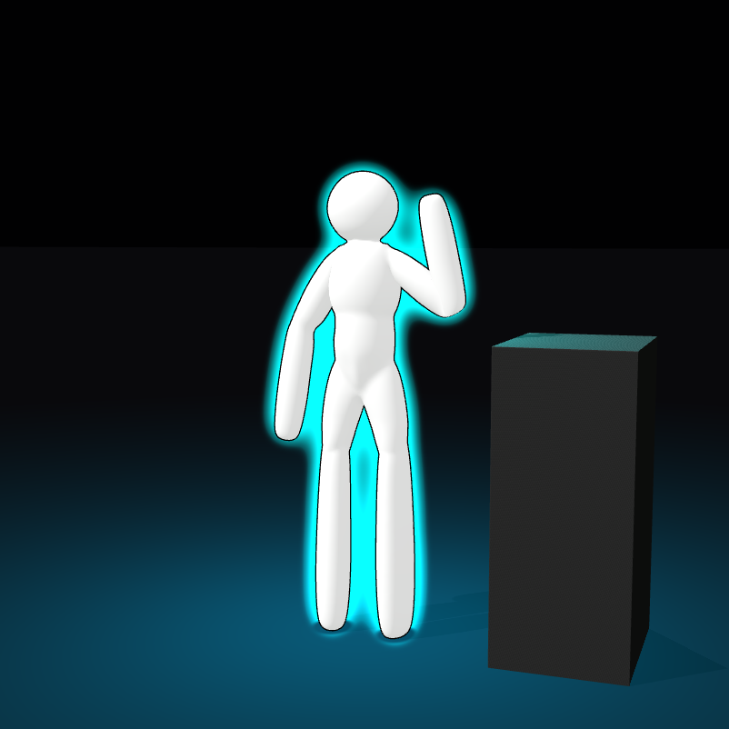
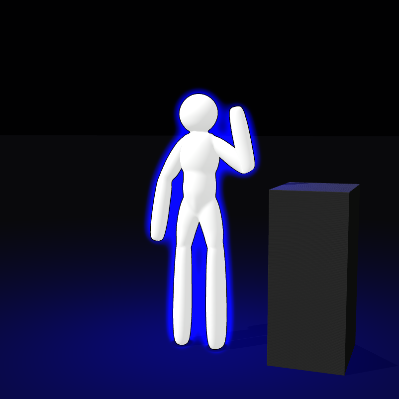
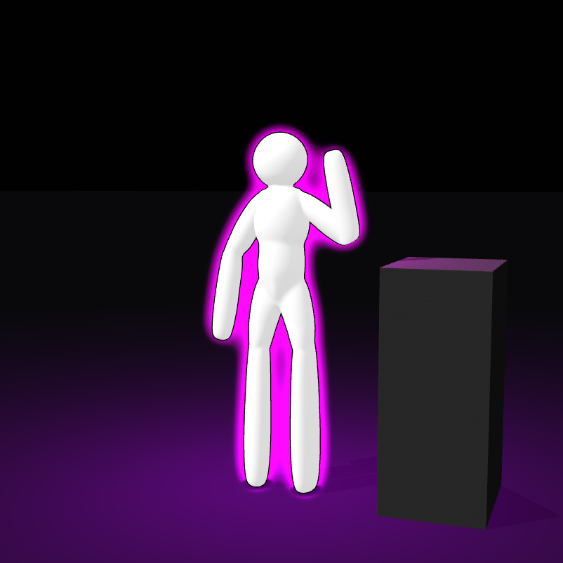

Trip · Six colors of light
Same approved incandescent intensity, pose, camera and grounded contact. Exterior hue changes; saturation 100%, lightness 50%.

Red · 0°White body · black outline · grounded feet
Yellow · 60°White body · black outline · grounded feet
Green · 120°White body · black outline · grounded feet
Cyan · 180°White body · black outline · grounded feet
Blue · 240°White body · black outline · grounded feet
Magenta · 300°White body · black outline · grounded feet